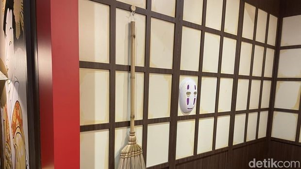
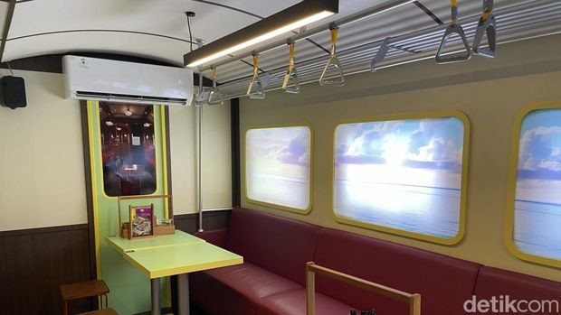

Amalia Novia Putri - detikTravel
Rabu, 04 Desember 2024
Jakarta - Bagi para pencinta Studio Ghibli, menikmati suasana ajaib dari film-film seperti Spirited Away atau My Neighbor Totoro memang menjadi obsesi. Sebuah restoran ramen unik ini mewujudkan pengalaman tersebut melalui dekorasinya. Restoran itu menggabungkan elemen-elemen khas dari dua film legendaris Ghibli dengan sensasi kuliner ramen Jepang autentik. Kyuka Ramen cabang Depok mengusung konsep ruang kelas tradisional Jepang.
Di Depok, Kyuka Ramen semakin bernuansa Jepang karena memiliki chef asli dari Jepang. "Kyuka dalam bahasa Jepang artinya vacation. Maksudnya, ketika pelanggan makan ramen di tempat kami, tidak hanya menikmati rasa ramen otentik Jepang, tetapi juga seperti sedang berlibur ke Jepang. Konsep kami tematik dan unik, setiap cabang punya tema berbeda. Di sini, vacation-nya seperti masuk ke dunia Studio Ghibli Jepang," kata Angga Atrie, pemilik dan marketing director Kyuka Ramen, dalam perbincangan dengan detikTravel beberapa waktu lalu.
Dari luar, restoran itu memikat dengan dekorasi bangunan berwarna merah khas Jepang, sementara di dalamnya, suasana berubah menjadi dunia penuh keajaiban yang terinspirasi dari film-film Studio Ghibli
Interior restoran dihiasi rak buku dan berbagai pajangan bertema Ghibli, menciptakan atmosfer yang hangat dan menawan. Ketika turun ke lantai bawah, pengunjung akan disambut oleh berbagai boneka kecil putih dari Spirited Away yang ditempatkan dekat pintu, serta sosok Totoro yang terlihat didalam jendela.
Di area bawah, terdapat replika sumur ikonik dunia Ghibli dan gerbong kereta dari Spirited Away, menggambarkan Kaonashi dan Chihiro duduk di dalamnya. Selain itu, spot Instagramable berupa jembatan merah yang menyerupai jembatan elemen ikonik saat Chihiro dan orang tuanya pertama kali memasuki dunia roh, menjadi daya tarik utama. Menikmati semangkuk ramen sambil merasakan suasana unik ini terasa semakin istimewa dengan momen berswafoto di jembatan, mengabadikan pengalaman seperti benar-benar berada di dunia Spirited Away studio ghibli.
Ditambah dengan ruang makan bergaya Jepang yang dilengkapi berbagai properti seperti topeng dan sapu terbang Kaonashi, pengalaman berkunjung ke Kyuka Ramen Studio Ghibli ini benar-benar menghadirkan sensasi kuliner sekaligus petualangan visual yang tak terlupakan. "Sebenarnya yang paling menonjol itu yang di gerbong kereta, dimana itu adalah salah satu scene ikonik di Spirited Away," ujar Angga.
Kyuka Ramen di Depok tidak hanya menawarkan pengalaman unik menikmati ramen otentik buatan chef Jepang, tetapi juga memastikan kehalalannya dan cita rasanya, sehingga aman untuk semua. Harga ramen mulai dari Rp 39.000, dengan pilihan menu seperti Tori Paitan Ramen, Truffle Signature Ramen, dan Spicy Tori Paitan Ramen. Traveler juga bisa memilih jenis mie lurus atau keriting sesuai selera. Beragam camilan khas Jepang seperti Korokke kroket Jepang, Gyoza Yaki, dan Tori Karage melengkapi menu, dipadukan dengan ocha dingin yang bisa diisi ulang, menciptakan perpaduan sempurna. Kyuka Ramen buka setiap hari dari pukul 10.00 hingga 22.00, berlokasi di Jl. Sersan Anning, Pancoran Mas, Depok, Jawa Barat. Bagi traveler yang ingin menikmati ramen sambil merasakan suasana dunia Studio Ghibli dan berfoto di spot Instagramable, tempat ini mudah dijangkau. Cukup naik KRL arah Bogor, turun di Stasiun Depok Lama, lalu melanjutkan perjalanan dengan ojek online.